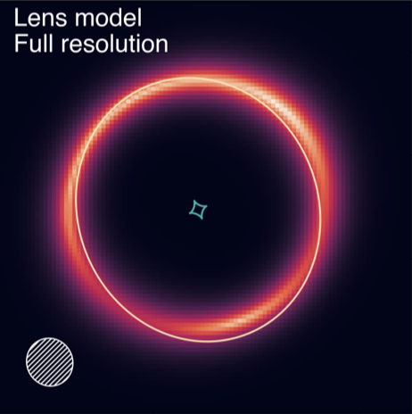
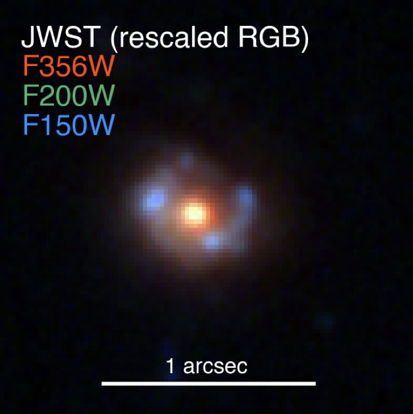
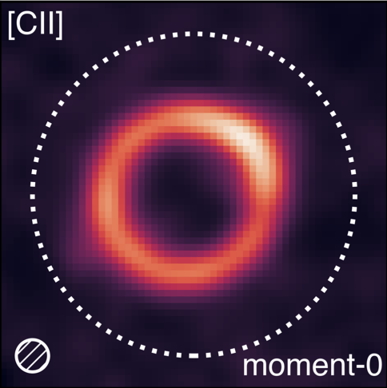

Galaxy-galaxy strong lensing
Current and incoming surveys from Rubin/LSST, Roman, and Euclid will uncover hundreds of thousands of galaxy-galaxy lenses — orders of magnitude more than are known today. My PhD work focuses on developing and improving the methods, tools, and diagnostics that will enable scientists to study these enormous datasets.

Ring galaxies
Collisional ring galaxies — rare systems whose star-forming rings are produced by a smaller galaxy plunging through the disk of a larger one — can closely resemble Einstein rings. I discovered the most distant ring galaxy known to date, at z = 4.0148, and discussed how such objects act as contaminants in searches for gravitational lenses.

[CII] as a gas tracer
[CII], the 158 μm line of ionized carbon, is the workhorse emission line for studying the distant universe. I wrote two papers (2022a, 2022b) calibrating it as a tracer of molecular and atomic gas in simulated z = 6 galaxies, and now study it under the cosmic microscope in ALMA observations of lensed galaxies.